Watari
Watari · Miyagi
Watari
Highlighted on the Miyagi map.
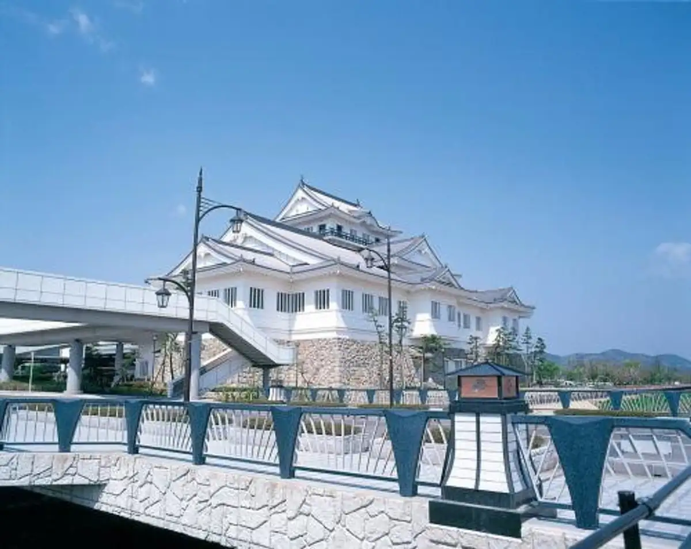
Stay
グリーンホテル亘理
Guriinhoteru Kou Ri
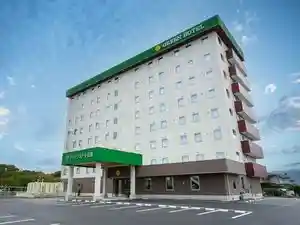
中正旅館
Chuusei Ryokan
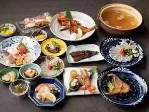
民宿 浜まつ
Minshuku Hama Matsu
Tabist マイルーム わたり鳥の海
Tabist Mairuumu Watari Tori No Umi
ファミリーロッジ旅籠屋・仙台亘理店
ファミリーロッジ旅籠屋・仙台亘理店
【わたり温泉 鳥の海】 青の絶景と金色にかがやく天然温泉の宿
( Watari Onsen Tori No Umi ) Ao No Zekkei To Kin'iro Nikagayaku Tennen Onsen No Yado
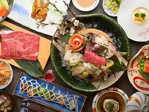
Dining
あら浜 亘理店
Ara Hama Kou Ri Mise
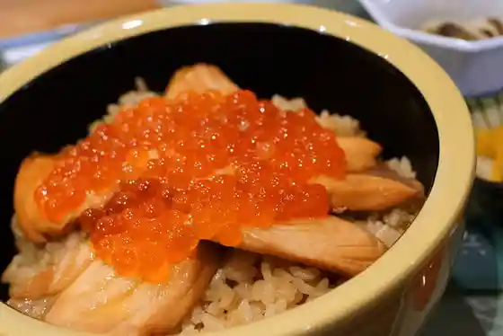
どんぶり亭 まつもと
Donburi Tei Matsumoto
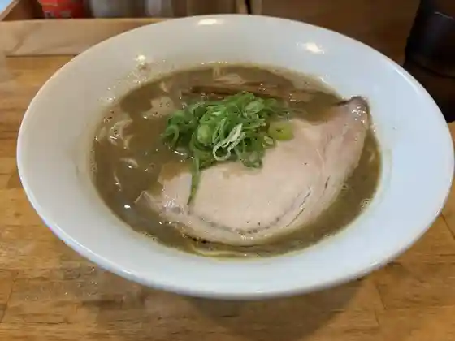
中華蕎麦 會
Chuuka Soba Kai
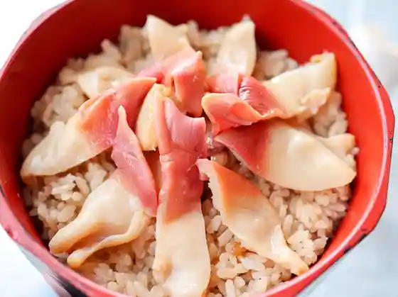
田園 亘理店
Den'en Kou Ri Mise
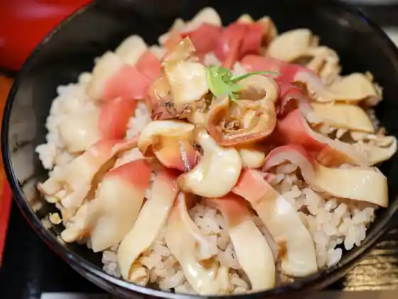
浜寿し
Hama Hisashi Shi
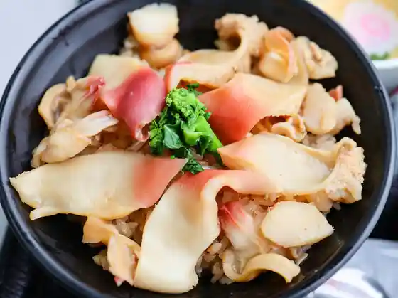
魚屋 hide
hide
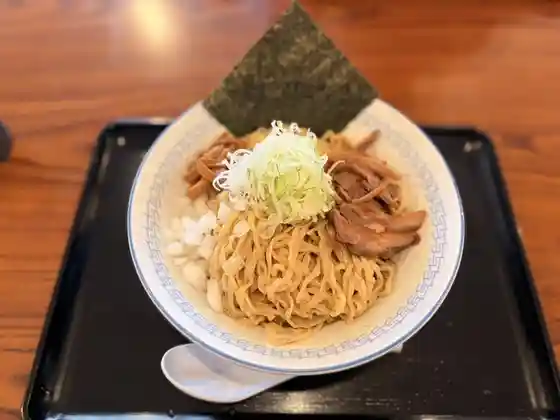
RA-MEN 与平治 渡
RA-MEN
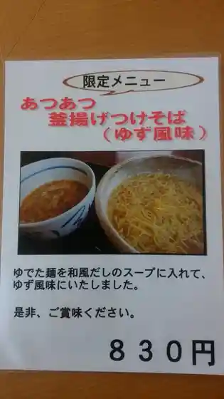
麺屋酒房 喜凛
Men Ya Sake Bou Ki Rin
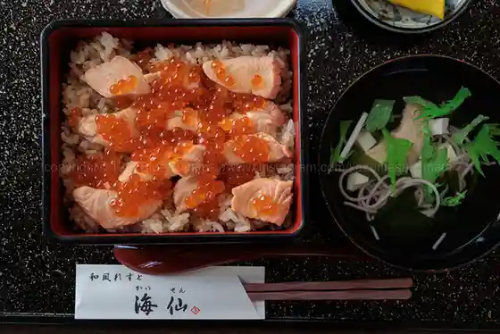
海仙
Umi Sen
タイ ランナ
Tai Ranna
菊一商店
Kikuichi Shouten
Chinese kitchen 善や
Chinese kitchen
淡路島バーガー 鳥の海店
Awaji Shima Baagaa Tori No Umi Mise
Mustache Burger
Mustache Burger
らーめん せん家
Raamen Sen Ie
わたり温泉 鳥の海
Watari Onsen Tori No Umi
海鮮大海
Kaisen Taikai
米沢ラーメン すえひろ
Yonezawa Raamen Suehiro
農家レストラン 旬菜館
Nouka Resutoran Jun Saikan
たなぼた家の手作りおはぎ本舗
Tanabota Ie No Tezukuri Ohagi Honpo
フラミンゴ
Furamingo
爆爆
Baku Baku
中華ハウス オオた
Chuuka Hausu Oo Ta
民宿 浜まつ
Minshuku Hama Matsu
そば処よし田屋
Soba Tokoro Yoshi Taya
グリムコーヒーロースター
Gurimukoohiiroosutaa
はなひな
Hanahina
みちくさ食堂
Michikusa Shokudo
香園
Kaori Sono
カフェ笑夢
Kafe Warai Yume
瀬止凡 船橋屋 五日町店
Se Shi Bon Funabashi Ya Itsukamachi Mise
鳥の海 ふれあい市場
Tori No Umi Fureai Shijou
中正旅館
Chuusei Ryokan
とんかつ 華菜
Tonkatsu Kana
みやぎのあられ
Miyaginoarare
手打うどん屋伝七
Teuchi Udon Ya Denshichi
めし家
Meshi Ie
おおくまふれあいセンター
Ookumafureai Sentaa
龍味
Ryuu Aji
ごはんと麺の店 見晴
Gohanto Men No Mise Miharashi
アップルパイカフェ 高野
Appurupaikafe Takano
SEVEN TWO CAFE
SEVEN TWO CAFE
とうふ処 豆達人
Toufu Tokoro Mame Tatsujin
中国厨房 彩苑
Chuugoku Chuubou Sai En
白井商店幸邦丸
Shirai Shouten Sachi Kuni Maru
万里
Banri
ソウル亭Ⅱ炭焼
Souru Tei Ⅱ Sumiyaki
Ema
Ema
つくし
Tsukushi
デルソーレ
Derusoore
おしか商店
Oshika Shouten
笹かまの郷 馬上かまぼこ店 本社
Sasa Kamano Sato Bajou Kamaboko Mise Honsha
とんかつ小野
Tonkatsu Ono
高村屋
Takamura Ya
ラルカンシェール みやぎ生協亘理店
Rarukanshieeru Miyagi Seikyou Kou Ri Mise
酒房 いづもんどこ
Sake Bou Izumondoko
Cafe 悠里
Cafe
安達魚店
Adachi Sakana Mise
セブンイレブン 宮城亘理南店
Sebun'irebun Miyagi Kou Ri Minami Mise
なごみ庵
Nagomi Iori
軽食 喫茶 トミタ
Keishoku Kissa Tomita
和風レストランまるまつ 亘理店
Wafuu Resutoran Marumatsu Kou Ri Mise
門馬うなぎ店
Monma Unagi Mise
マクドナルド 亘理コープ店
Makudonarudo Kou Ri Koopu Mise
渡部菓子店
Watanabe Kashi Mise
馬上かまぼこ店 さざんか通り店
Bajou Kamaboko Mise Sazanka Touri Mise
からふと屋
Karafuto Ya
Liglad
Liglad
中町カフェー
Nakamachi Kafee
せとや
Setoya
居酒屋YOSAKU わたり店
YOSAKU
ファミリーマート 宮城亘理店
Famiriimaato Miyagi Kou Ri Mise
小さな隠れ家のかき氷 涼華
Chiisa Na Kakure Ie Nokaki Koori Ryou Hana
まめちちどーなつ
Mamechichidoonatsu
L’Atelier du Muget
LAtelier du Muget
BACK PORT CAFE
BACK PORT CAFE
幸楽苑 亘理店
Kouraku En Kou Ri Mise
こうちゃん園
Kouchan Sono
セブンイレブン 亘理荒浜店
Sebun'irebun Kou Ri Arahama Mise
話食舎おけい
Hanashi Shoku Sha Okei
有限会社わたり納豆
Yuugengaisha Watari Nattou
このみ
Konomi
大衆ハラミ・焼肉専門店 ワタジン
大衆ハラミ・焼肉専門店 ワタジン
肉 あかり
Niku Akari
つつみ屋 亘理店
Tsutsumi Ya Kou Ri Mise
大丁内農場・農家のお店 大丁内
大丁内農場・農家のお店 大丁内
モンペリエ ヨークベニマル亘理店
Monperie Yookubenimaru Kou Ri Mise
不二家 みやぎ生協亘理店
Fujiya Miyagi Seikyou Kou Ri Mise
ほっともっと 亘理町店
Hottomotto Kou Ri Machi Mise
ヨークベニマル 亘理店
Yookubenimaru Kou Ri Mise
セブンイレブン 亘理インター店
Sebun'irebun Kou Ri Intaa Mise
山田屋
Yamada Ya
幸楽苑のからあげ家 亘理店
Kouraku En Nokaraage Ie Kou Ri Mise
カインズ 亘理店
Kainzu Kou Ri Mise
わたり温泉 鳥の海 軽食コーナー
Watari Onsen Tori No Umi Keishoku Koonaa
源兵衛亘理工房
Genbee Kou Rikou Bou
ぽてと
Poteto
幸友水産
Sachi Tomo Suisan
不二家 ヨークベニマル亘理店
Fujiya Yookubenimaru Kou Ri Mise
KIBOUのアップルパイ
Kibou No Appurupai
ファミリーロッジ 旅籠屋 仙台亘理店
Famiriirojji Hatago Ya Sendai Kou Ri Mise
呑楽
Don Raku
あらはま海苔 直売所
Arahama Nori Chokubai Tokoro
スーパーセンタートライアル 亘理店
Suupaasentaatoraiaru Kou Ri Mise
昭和大衆ホルモン酒場トラヤ
Shouwa Taishuu Horumon Sakaba Toraya
ともに はま道
Tomoni Hama Michi
Tabist マイルーム わたり鳥の海
Tabist Mairuumu Watari Tori No Umi
LAWSON 亘理中町東店
LAWSON
ミニストップ 宮城亘理店
Minisutoppu Miyagi Kou Ri Mise
フレスコキクチ 亘理店
Furesukokikuchi Kou Ri Mise
ファミリーマート 荒浜店
Famiriimaato Arahama Mise
しまだや
Shimadaya
創作厨房ＴＡＴＳＵＭＩ亭
TATSUMI
めん六や 宮城亘理店
Men Roku Ya Miyagi Kou Ri Mise
焼肉処つたや
Yakiniku Tokoro Tsutaya
Hama Sushi
Hama Sushi
Domburitei Matsumoto
Domburitei Matsumoto
Japanese Style Rest Kaisen
Japanese Style Rest Kaisen
Seafood Taikai
Seafood Taikai
Del Sole
Del Sole
Komanjo
Komanjo
Route Sixty Six
Route Sixty Six
Farmer s Restaurant Shunsai Kan
Farmer s Restaurant Shunsai Kan
Miharu
Miharu
Hormone Daiwa
Hormone Daiwa
Seafood Kaisenzushi Ichimaru
Seafood Kaisenzushi Ichimaru
Togoro
Togoro
Noodle Shop Denshichi
Noodle Shop Denshichi
Ajizammai
Ajizammai
Yakiniku Dokorotsutaya
Yakiniku Dokorotsutaya
Tanryuhanten
Tanryuhanten
Chinese House Ota
Chinese House Ota
Hongoya
Hongoya
Konomi
Konomi
Marumatsu Watari
Marumatsu Watari
Ton Chan Daruma
Ton Chan Daruma
Yokaro Sushi
Yokaro Sushi
Ton Chan Aozora
Ton Chan Aozora
Seoul Tei IIsumisho
Seoul Tei IIsumisho
Donga
Donga
Kitcho
Kitcho
Dining Fuku
Dining Fuku
Ramen Furusato
Ramen Furusato
Mizu Keshiki
Mizu Keshiki
Limoges Pastry
Limoges Pastry
Yukimura
Yukimura
Uta Kurabu
Uta Kurabu
Big Boy Watari
Big Boy Watari
Menyashu Bokirin
Menyashu Bokirin
Hungry Cats
Hungry Cats
Tomato
Tomato
Izakaya Murasaki Watari
Izakaya Murasaki Watari
Pasta Copan Watari
Pasta Copan Watari
Sakumaya Branch
Sakumaya Branch
Joanna Pastry
Joanna Pastry
Otsuki Pastry
Otsuki Pastry
Tsubametei
Tsubametei
Burotodorufu
Burotodorufu
Meal Processing Daimon
Meal Processing Daimon
Story Diet Building Okei
Story Diet Building Okei
Takenohana
Takenohana
Izakaya Soul Onma
Izakaya Soul Onma
Ramen Sendai
Ramen Sendai
Song Studio Kizuna
Song Studio Kizuna
Sobadokoro Yoshidaya
Sobadokoro Yoshidaya
Onsen
Watari Onsen Tori-no-Umi
Day-use and lodging hot spring on the Arahama waterfront
Shop
Tori-no-Umi Fureai Market
Seafood and local-product market beside Tori-no-Umi lagoon
Majo Kamaboko Sasakama no Sato
Fish-cake factory shop known for sasakamaboko
Sights
Watari Town Folk Museum
Municipal museum of Watari history and culture
Kashima Amatawake Shrine
Historic shrine in the Okuma Kashima area
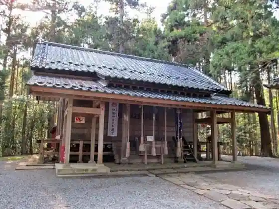
Kawaguchi Shrine
Coastal shrine in the Arahama district
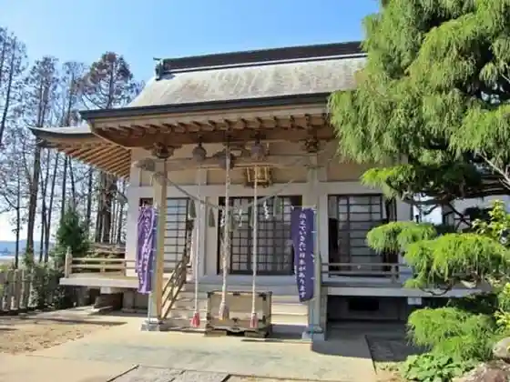
Afukukawahaku Shrine
Local shrine in the Okuma Tazawa area
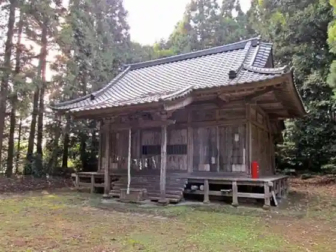
Suzuki Tourist Strawberry Farm
Seasonal strawberry-picking farm in Okuma
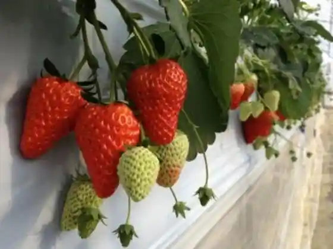
Watari Shrine
Central Watari shrine near the old castle site
Kannon-in Temple
Temple in the Okuma Kashima district
Arahama Nigiwai Corridor Shopping Street
Rebuilt waterfront shopping street in Arahama
Tori-no-Umi Lagoon
Coastal lagoon popular for birdwatching and sunsets